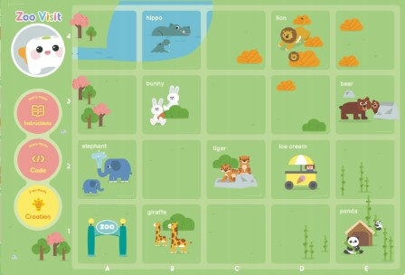

Welcome to the upgraded virtual Zoo Visit! Now featuring a 3D TaleBot and more commands. Your mission is to program TaleBot to visit the Panda.
Program the 3D TaleBot to navigate the zoo map from its starting position to the Panda's enclosure.
You'll be programming TaleBot on a vibrant zoo map like the one below. TaleBot will start near the bottom-left. The Panda is located towards the upper-middle area.
(The actual interactive map is in the environment)
In the Zoo Visit Environment, you'll find:
Move Forward, Move Backward, Turn Left (90°), Turn Right (90°).Go!: Executes the current program sequence.Clear All: Deletes the entire program.Delete Last: Removes the last command added.Repeat Program + / -: Set how many times the entire program sequence will repeat.Record Voice: Simulate recording a short voice message (you'll type it in).Add 'Play Recording' to Program: Adds a command to play your recorded message.Random Dance: Adds a command for TaleBot to perform a conceptual dance.Repeat Program buttons if you want the whole sequence to run multiple times.Move Forward and Turn Left/Right commands.Move Forward, Move Forward, Turn Right, Move Forward... (This is just an example, you'll need to figure out the exact path!)Go! button.Delete Last or Clear All and try again.
Ready to guide the 3D TaleBot?
Open the Enhanced Zoo Visit Environment!